-
Công tác chuẩn bị.
-
Dụng cụ: Bộ dụng cụ cầm tay, vam chuyên dùng, ê tô, chổi lông.
-
Thiết bị kiểm tra: Äồng hồ Ä‘o Ä‘iện vạn năng, thiết bị kiểm tra roto, bà n map, đồng hồ so đế từ, khối V.
-
Các bước tháo. (sỠdụng máy phát của Toyota là m minh hoạ)
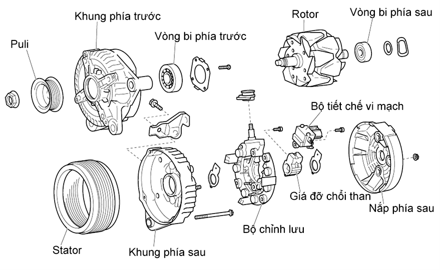
Hình 2.11: Cấu tạo máy phát Ä‘iện xoay chiá»u của Toyota.
Tháo máy phát ra từ trên xe xuống.
   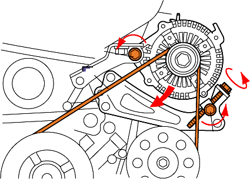
Tháo cáp âm ra khá»i ắc quy:
TrÆ°á»›c khi tháo cáp âm ra khá»i ắc quy, tắt các phụ tải trên xe, tắt chìa khoá Ä‘iện.
-
Ná»›i lá»ng bu lông lắp máy phát và tháo Ä‘ai dẫn Ä‘á»™ng.
-
Tháo các dây dẫn điện.
-
Tháo máy phát ra khá»i Ä‘á»™ng cÆ¡: Do phần lắp máy phát có bạc định vị, ăn khá»›p chặt lắc máy phát lên xuống má»™t và i lần tháo máy phát ra ngoà i.
      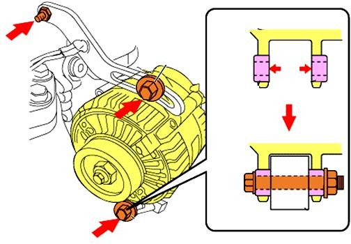
Hình 2.12: Tháo máy phát ra từ trên xe xuống.
Vệ sinh công nghiệp
SỠdụng chổi chuyên dùng, xăng, máy nén khà là m sạch bên ngoà i máy phát
   
Tháo rã máy phát.
Dùng cle hay tròng 10 mm tháo Ä‘ai ốc và phiến cách Ä‘iện ra khá»i chân phát Ä‘iện (B).
      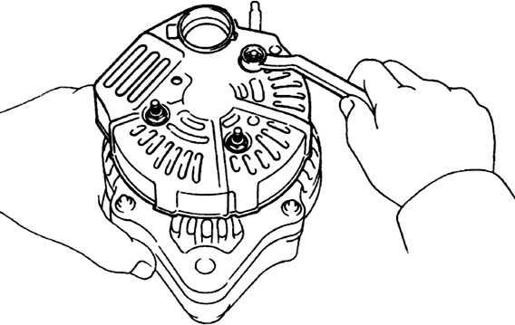
Tháo nắp sau.
Dùng cle hay tròng 8 mm tháo 3 đai ốc và chân mát, sau đó lấy nắp sau ra ngoà i.
     
Tháo rã vòng kẹp chổi than
Dùng tô vÃt 4 cạnh tháo 2 vÃt cố định, lấy vòng kẹp chổi than ra ngoà i.
     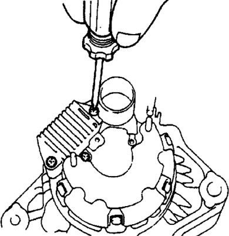
Tháo tiết chế vi mạch.
Dùng tô vÃt 4 cạnh tháo 3 vÃt bắt và lấy tiết chế vi mạch ra ngoà i.
       
Tháo bộ chỉnh lưu
Dùng tô vÃt 4 cạnh tháo 4 vÃt bắt dây của stato và bá»™ chỉnh lÆ°u, Ä‘Æ°a bá»™ chỉnh lÆ°u ra ngoà i.
       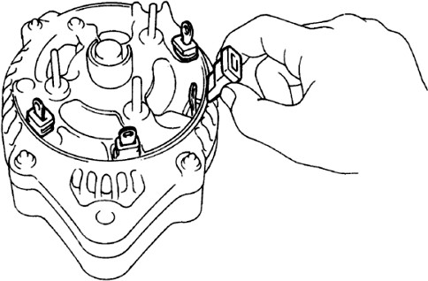
Tháo các chụp cao su cách điện.
SỠdụng tay tháo các chụp cao su cách điện giữa các đầu dây của stato và nắp sau.
       
Tháo đệm.
SỠdụng tay tháo miếng đệm giữa bộ chỉnh lưu và nắp sau.
Tháo puly máy phát.
Có nhiá»u phÆ°Æ¡ng pháp tháo puly, dùng thiết bị tháo nhÆ° hình dÆ°á»›i hay dùng thiết bị vặn ốc khà nén để tháo.
      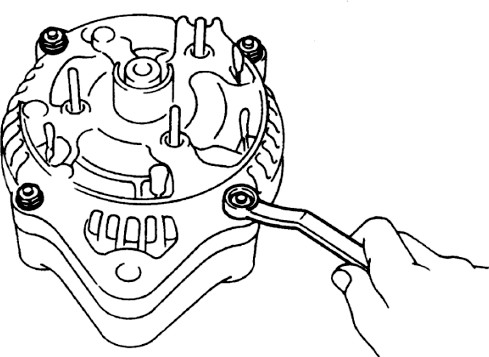
Tháo thân sau.
Thân sau ăn khớp với roto bằng vòng bi.
Dùng cle hay tròng 8 mm tháo 4 đai ốc liên kết nắp trước và sau.
      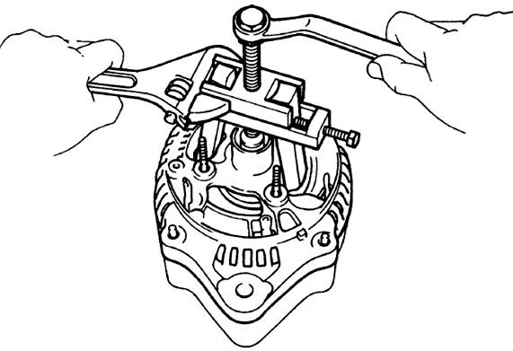
Sá» dụng vam chuyên dụng tháo nắp sau ra khá»i roto và nắp trÆ°á»›c.
      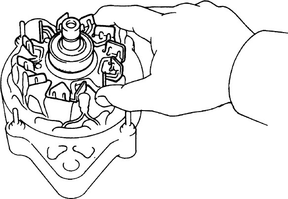
Tháo cụm roto máy phát.
Tháo roto ra khá»i thân stato máy phát
Vệ sinh công nghiệp.
SỠdụng chổi chuyên dùng, xăng, máy nén khà là m sạch các chi tiết vừa tháo của máy phát. Chú ý các chi tiết bằng cao su, nhựa như các vòng đệm chụp cách điện và tiết chế vi mạch, bộ chỉnh lưu không được vệ sinh bằng xăng dầu.
-
Các bước kiểm tra.
Kiểm tra sá»± nứt, vỡ, biến dạng, chá»n các lá»— ren của nắp trÆ°á»›c, sau. Äầu ren của trục.
Kiểm tra cụm roto máy phát
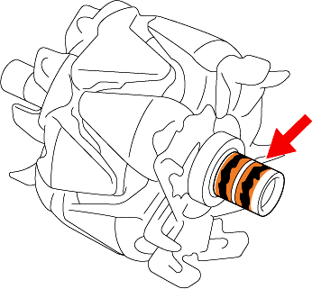
Kiểm tra và nh tiếp Ä‘iện xem có bị bẩn hay cháy không (và nh tiếp Ä‘iện tiếp xúc vá»›i chổi than, tia lá»a Ä‘iện gây ra bởi dòng Ä‘iện sẽ là m bẩn và cháy và nh tiếp Ä‘iện).
Sá» dụng giấy nhám 0-0 đánh lại và nh tiếp Ä‘iện. Chú ý: khi đánh lại uốn giấy nhám thà nh hình vòng cung tránh trÆ°á»ng hợp đánh theo Ä‘Æ°á»ng thẳng gây mòn không Ä‘á»u của và nh tiếp Ä‘iện.
Kiểm tra thông mạch giữa các và nh tiếp điện.
Dùng đồng hồ đo điện đặt thang đo điện trở, kiểm tra thông mạch giữa các và nh tiếp điện.
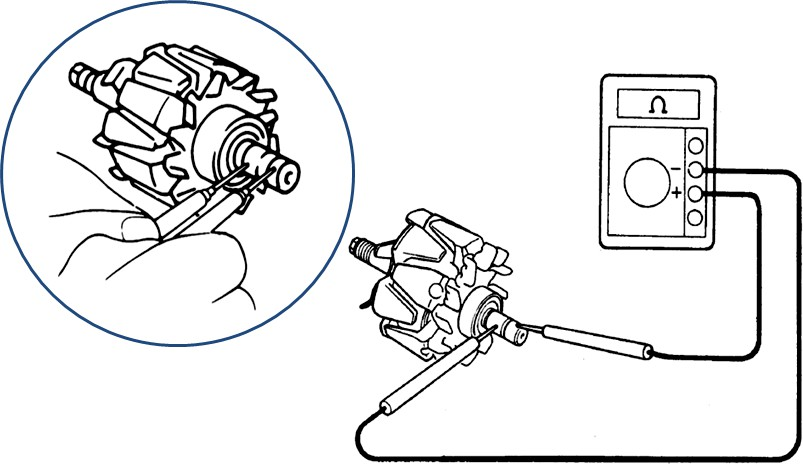
Kiểm tra thông mạch giữa cổ góp sỠdụng để phát hiện mở mạch bên trong cuộn dây.
Nếu nháºn thấy không thông mạch (có thể bị đứt) hay trị số không đúng tiêu chuẩn (cháºp mạch) thay roto.
Tiêu chuẩn: 2.8 - 3.0 Ω.
Kiểm tra cách điện giữa và nh tiếp điện và trục roto.
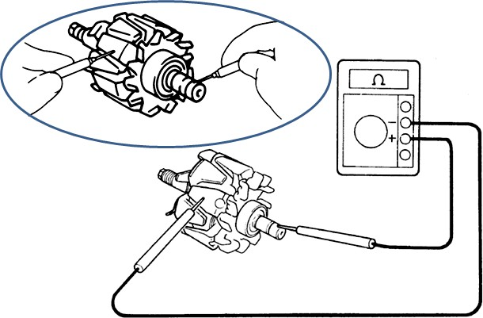
Dùng đồng hồ đo điện, kiểm tra cách điện giữa và nh tiếp điện và trục roto
Giữa và nh tiếp điện và trục roto tồn tại một trạng thái ngăn cách.
Kiểm tra cách Ä‘iện giữa và nh tiếp Ä‘iện và trục roto có thể phát hiện sá»± chạm cháºp, rò Ä‘iện giữa cuá»™n dây và trục roto.
Äo và nh tiếp Ä‘iện.
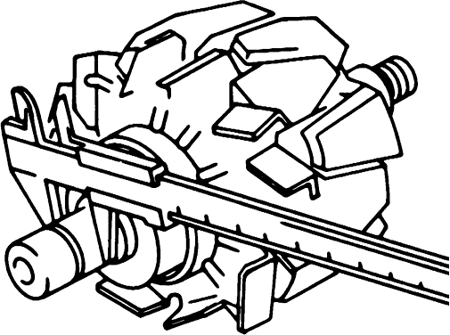
ÄÆ°á»ng kÃnh tối thiểu: 14,0 mm. Tiêu chuẩn Ä‘Æ°á»ng kÃnh: 14,4 mm Dùng thÆ°á»›c kẹp, Ä‘o Ä‘Æ°á»ng kÃnh ngoà i của cổ góp. Nếu kết quả Ä‘o vượt quá giá»›i hạn mòn tiêu chuẩn, thay roto.
Và nh tiếp Ä‘iện tiếp xúc vá»›i chổi than trong khi quay và tạo ra dòng Ä‘iện. Khi Ä‘Æ°á»ng kÃnh ngoà i của cổ góp thấp hÆ¡n so vá»›i giá trị tiêu chuẩn, tiếp xúc giữa cổ góp và chổi than sẽ không đủ, nó có thể là m giảm khả năng phát Ä‘iện của máy phát
Kiểm tra thông mạch cuộn dây stator.
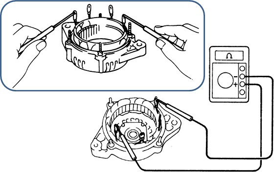
Dùng đồng hồ đo điện vạn năng kiểm tra thông mạch giữa các đầu cuộn dây
Nếu không thông mạch các cuá»™n dây stator bị đứt, thay thế hoặc sá»a chữa.
Kiểm tra cách điện cuộn stator.
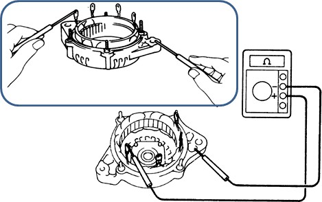
Dùng đồng hồ Ä‘o Ä‘iện vạn năng kiểm tra Ä‘á»™ cách Ä‘iện giữa cuá»™n dân và vá».
Nếu luôn thông mạch các cuá»™n dây stator bị chạm cháºp, thay thế hoặc sá»a chữa.
Kiểm tra chổi than.
Dùng thÆ°á»›c kẹp hay thÆ°á»›c lá, Ä‘o chiá»u dà i của chổi than nếu giá trị Ä‘o được thấp hÆ¡n tiêu chuẩn, thay thế chổi than (Äo chiá»u dà i của chổi than ở phần giữa chổi).
Và nh tiếp Ä‘iện tiếp xúc vá»›i chổi than khi chiá»u dà i của chổi than ngắn hÆ¡n so vá»›i giá trị tiêu chuẩn, trạng thái tiếp xúc sẽ kém Ä‘i, là m ảnh hÆ°á»›ng đến dòng Ä‘iện chạy qua.
Chiá»u dà i tối thiểu 4.5 mm (0.177 in.)
     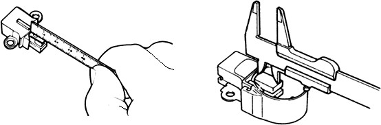
    Hình 2.14: Äo kiểm chổi than.
Thay chổi than.
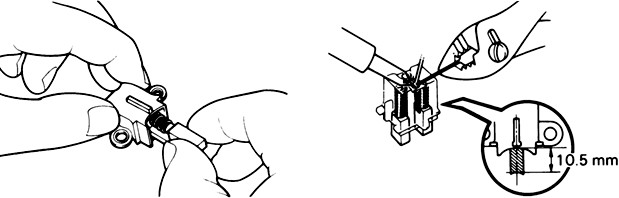
Khi chiá»u dà i tối thiểu không còn ta có thể tiến hà nh thay thế chổi than Chiá»u dà i tối Ä‘a: 10.5 mm (0.413 in.)
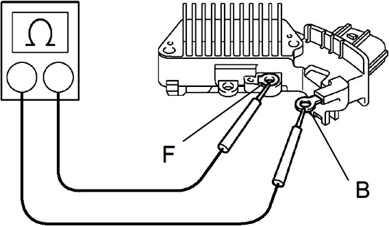
Hình 2.15: Thay thế chổi than.
Kiểm tra tiết chế vi mạch.
Dùng đồng hồ đo điện vạn năng dạng kim đặt thang đo điện trở, kiểm tra tiết chế vi mạch.
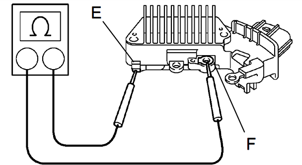
Nếu đảo que Ä‘o giữa hai chân B&F mà má»™t chiá»u lên má»™t chiá»u không thì tiết chế tốt ngược lai tiết chế há»ng.
Nếu đảo que Ä‘o giữa hai chân E&F mà má»™t chiá»u lên má»™t chiá»u không thì tiết chế tốt ngược lai tiết chế há»ng.
   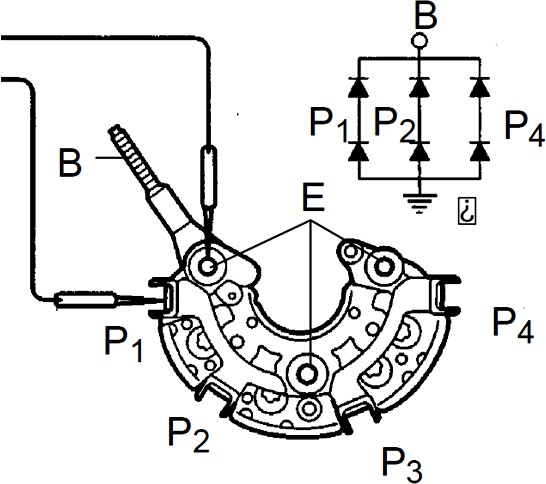
Kiểm tra điốt trong bộ chỉnh lưu.
Dùng đồng hồ đo điện vạn năng dạng kim đặt thang đo điện trở.
Äo giữa cá»±c B bá»™ chỉnh lÆ°u và cá»±c P1 đến P4, khi đảo ngược cá»±c của dây đồng hồ, và kiểm tra chỉ có má»™t chiá»u thông mạch.
Thay đổi đầu nối của cực B đến cực E. Thực hiện cùng quy trình như trên.
   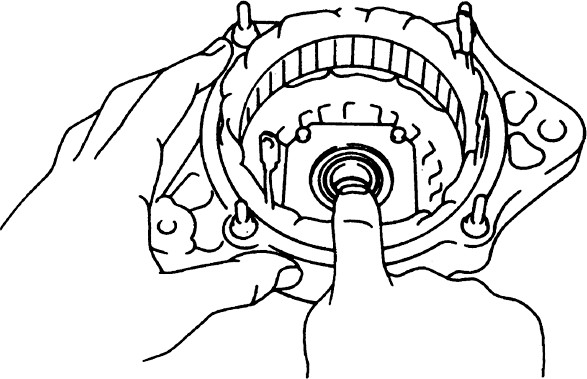
Kiểm tra ổ bi nắp trước
Sá» dụng tay kiểm tra xem có bị rÆ¡ lá»ng hay bị bó không.
Nếu vòng bi bị hÆ° há»ng ta tiến hà nh thay thế.
   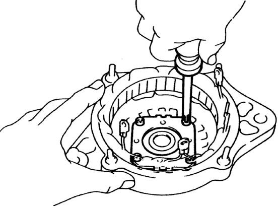
Thay thế ổ bi nắp trước.
Dùng tô vÃt 4 cạnh tháo miếng chặn vòng bi.
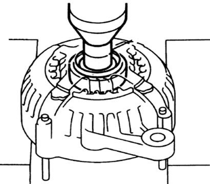
Sá» dụng Ä‘á»™t ống chuyên dụng tháo vòng bi ra khá»i nắp máy phát.
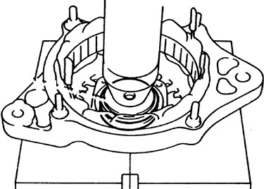
Lắp vòng bi và o nắp máy phát
Kiểm tra ổ bi sau máy phát.
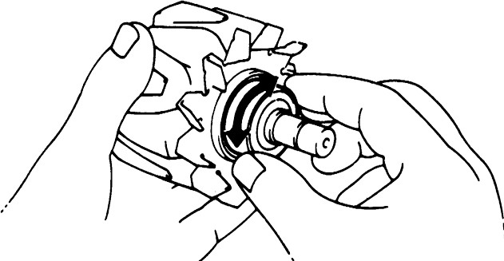
Sá» dụng tay kiểm tra vòng bi có bị rÆ¡ lá»ng hay bị bó không.
Nếu vòng bi bị hÆ° há»ng ta tiến hà nh thay thế.
Thay thế ổ bi sau máy phát
Dùng cảo chuyên dụng tháo vòng bi ra khá»i roto, thay thế vòng bi má»›i.
      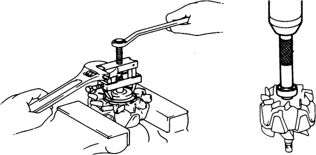
Hình 2.16: Thay thế ổ bi sau.
-
Các bước lắp. (ngược với quy trình tháo). Lắp roto và o nắp trước máy phát.
Lắp nắp sau.
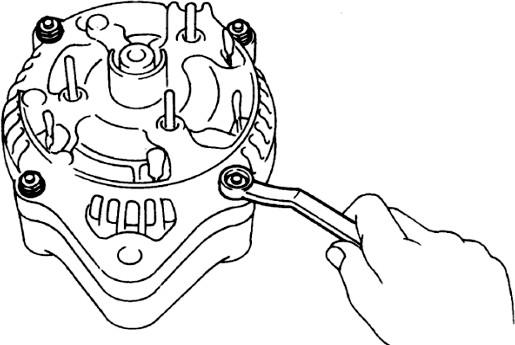
Siết ốc liên kết nắp trước và sau máy phát.
Lắp puly và o máy phát.
      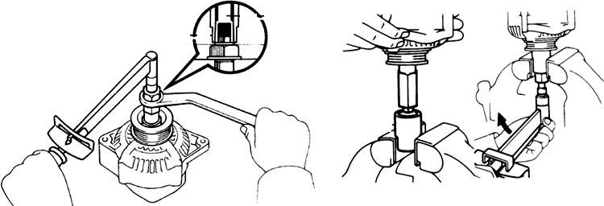
Hình 2.17: Lắp puly máy phát.
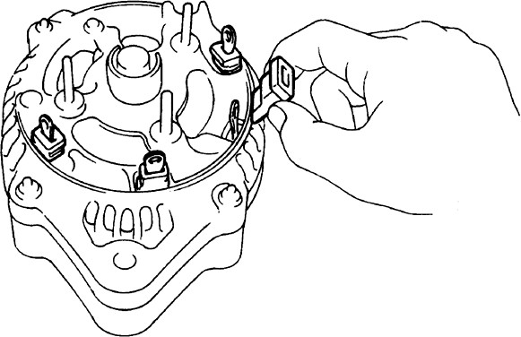
Lắp đệm cách điện cao su và o các đầu dây stato.
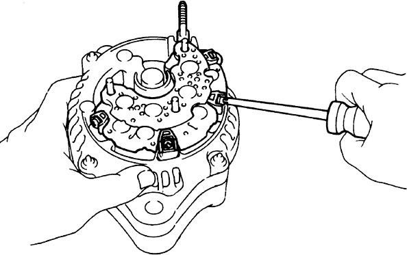
Lắp bộ chỉnh lưu và o máy phát.
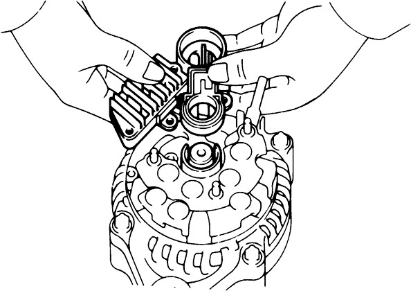
Lắp bộ chổi than và o bộ tiết chế vi mạch.
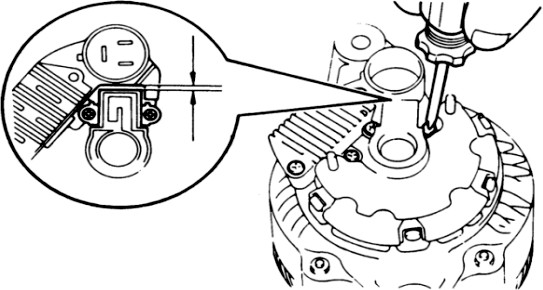
Lắp bộ chổi than tiết chế vi mạch và o máy phát.
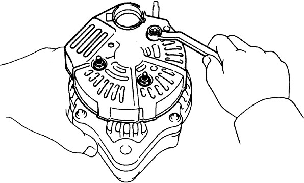
Lắp nắp bảo vệ sau và o máy phát.
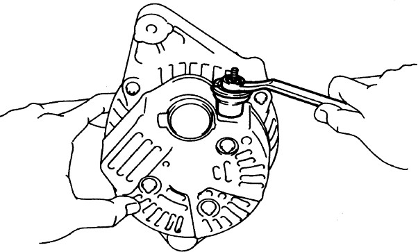
Lắp đai ốc và phiến cách điện và o chân B.
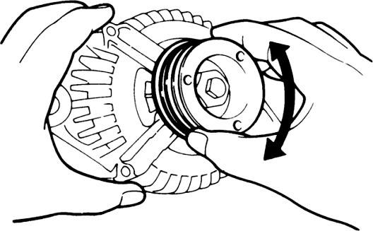
Xoay puly máy phát bằng tay và cảm nháºn có tiếng ồn và chặt khÃt hay không.
-
Kiểm thá».
Kiểm thỠtheo chế độ máy phát.
-
Gá máy phát (1) lên ê tô.
-
Cấp Ä‘iện cho cuá»™n kÃch thông qua 1 Ä‘iện trở (4) hay bóng đèn.
-
Mắc 1 bóng đèn thỠ(3) và o cực “+†máy phát.
-
Dùng ngoại lực quay máy phát.
-
Nếu đèn thỠsáng, máy phát không kêu kẹt là tốt.
      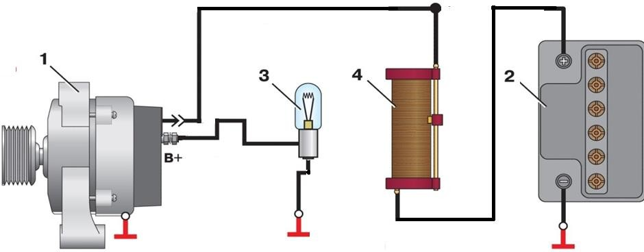
Hình 2.18: Sơ đồ kiểm thỠmáy phát.
Kiểm thỠtrên máy chuyên dùng.
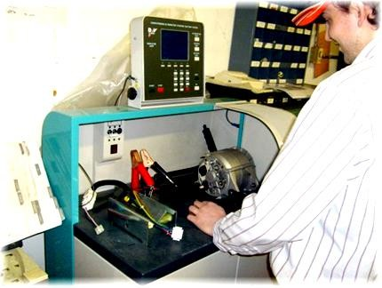
Hình 2.19: Kiểm thỠtrên máy chuyên dùng.
-
Lắp máy phát và o động cơ.
Lắp dây dai và o puly máy phát và tiến hà nh căng dây đai đúng tiêu chuẩn.
-
Máy phát Ä‘iện xoay chiá»u của Nissan.
     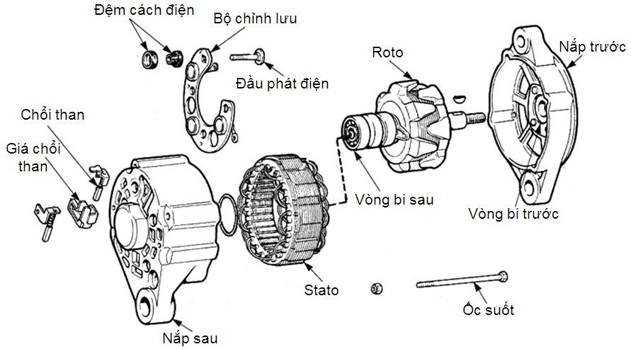
Hình 2.20: Cấu tạo máy phát Ä‘iện xoay chiá»u của Nissan.
     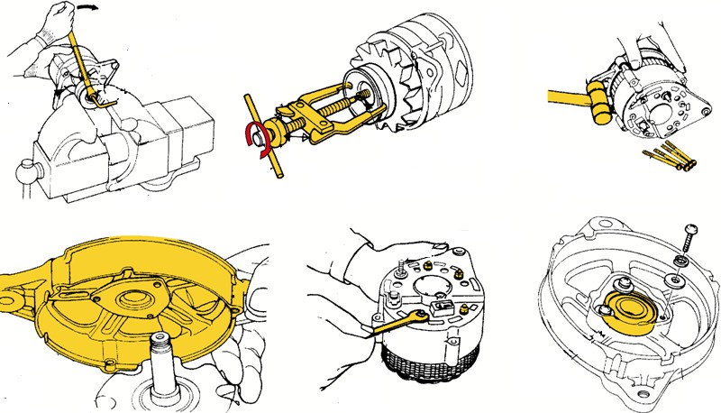
Hình 2.21: SÆ¡ đồ tháo máy phát Ä‘iện xoay chiá»u của Nissan.
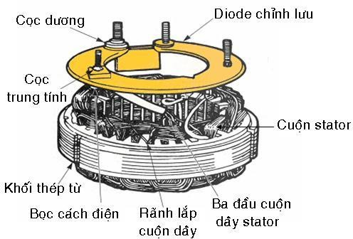
Khác vá»›i dạng máy phát của Toyota máy phát Ä‘iện xoay chiá»u của Nissan có thể tháo rá»i stato ra khá»i nắp trÆ°á»›c.
Liên kết giữa bộ chỉnh lưu và dây của stato bằng mối hà n.
Khi tháo stato ra khá»i nắp trÆ°á»›c thì stato, bá»™ chỉnh lÆ°u tạo thà nh má»™t khối.
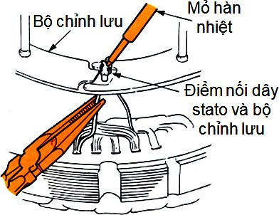
Trước khi đo kiểm stato và bộ chỉnh lưu ta cần loại bỠliên kết giữa chúng.
Sá» dụng má» hà n gia nhiệt các mối hà n giữa dây stato và bá»™ chỉnh lÆ°u sau đó tháo rá»i stato, bá»™ chỉnh lÆ°u.
Chổi than và giá đỡ chối than, bá»™ chỉnh lÆ°u liên kết nắp sau bằng bu lông. Äiá»u nà y gây khó khăn khi lắp roto và o vì vòng bi sau và cổ góp gây gẫy chổi than (chổi than dÆ°á»›i tác Ä‘á»™ng của lò xo chổi than luôn Ä‘i xuống)
TrÆ°á»›c khi lắp ta sá» dụng que chêm chổi than (que sắt có Ä‘Æ°á»ng kÃnh từ 0,5
- 0,7 mm) Ä‘Æ°a và o lá»— ở nắp sau máy phát nâng và giữ cho chổi than không Ä‘i xuống dÆ°á»›i. ÄÆ°a roto và o lắp nắp trÆ°á»›c siết ốc cố định sau đó rút que chêm chổi than ra ngoà i lúc nà y chổi than trở vá» vị trà ban đầu (luôn tỳ và o cổ góp).
     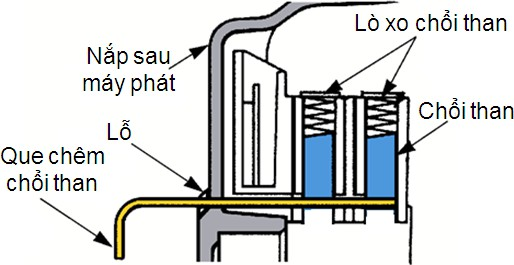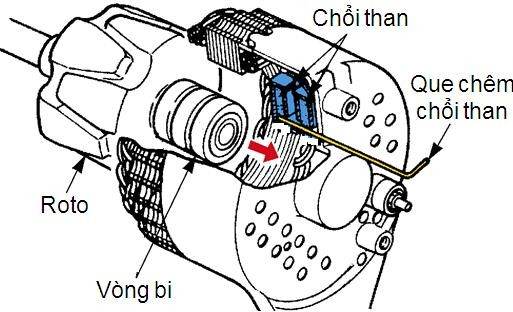
    Hình 2.22: Phương pháp lắp chổi than máy phát điện Nissan.
-
Nháºn biết má»™t số máy phát Ä‘iện xoay chiá»u thông dụng.
Các máy phát Ä‘iện xoay chiá»u của các hãng sản xuất, cÆ¡ bản có cấu tạo giống nhau chúng chỉ khác nhau vị trà cá»c bắt dây.
Nháºn diện các cá»c bắt dây rất cần thiết cho công tác kiểm tra bảo dưỡng.
      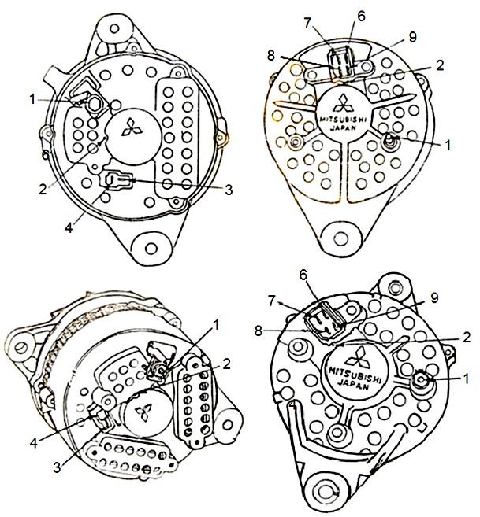
Hình 2.23: Máy phát Ä‘iện xoay chiá»u hiệu Mitsubishi.
1. Äầu bắt dÆ°Æ¡ng ắc quy; 2. Lá»— giữ chổi than; 3. Cá»±c L; 4. R cá»±c kÃch từ;
-
Mát; 6. N đầu cuá»™n stato; 7. E mát; 8. F cá»±c kÃch từ; 9. A cá»±c ra chỉnh lÆ°u.
Loại máy phát nà y thÆ°á»ng được lắp trên xe Chrysler, Mazda, Mitsubishi.
      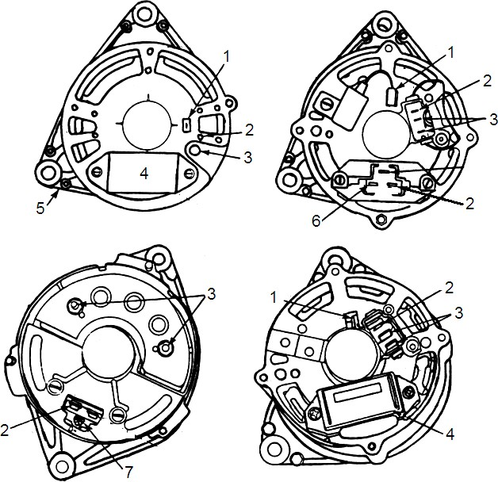
Hình 2.24: Máy phát Ä‘iện xoay chiá»u hiệu Bosch.
1. Äầu dây tụ lá»c; 2. Cá»±c kÃch từ; 3. Äầu bắt dÆ°Æ¡ng ắc quy; 4. Bá»™ Ä‘iá»u chỉnh Ä‘iện; 5. Mát; 6. Cá»±c kÃch từ; 7. Cá»±c tiếp mát.
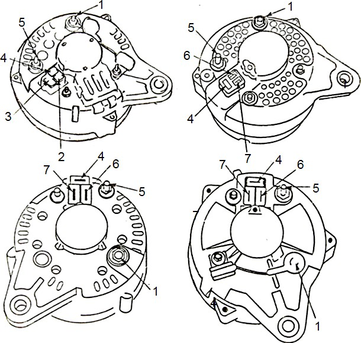
Hình 2.25: Máy phát Ä‘iện xoay chiá»u hiệu Nippondenso.
1. Äầu dây tụ lá»c; 2. Cá»±c S; 3. Cá»±c L; 4. Cá»±c kÃch từ; 5. Äầu bắt dÆ°Æ¡ng ắc quy; 6. N đầu cuá»™n stato; 7.E cá»±c tiếp mát.
      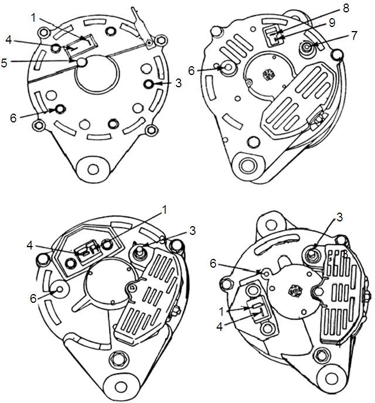
Hình 2.26: Máy phát Ä‘iện xoay chiá»u hiệu Hitachi.
1. N đầu cuá»™n stato; 2. Lá»— giữ chổi than; 3. A cá»±c dÆ°Æ¡ng ắc quy; 4. F cá»±c kÃch từ; 5. Lá»— giữ chổi than; 6. E mát; 7. B đầu bắt dÆ°Æ¡ng ắc quy; 8. S đánh lá»a;
9. L đèn báo nạp.
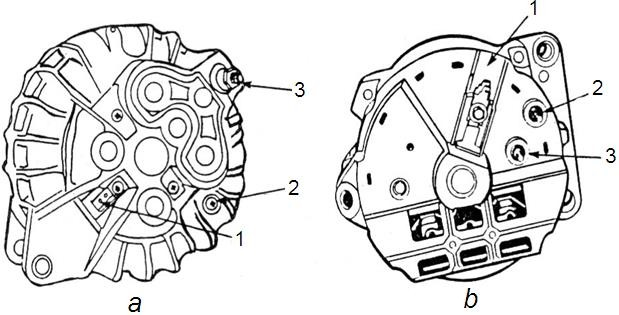
     Hình 2.27: Máy phát Ä‘iện xoay chiá»u hiệu Chrysles.
        1. Cá»±c dÆ°Æ¡ng ắc quy; 2. Mát; 3. Cá»±c kÃch từ.
     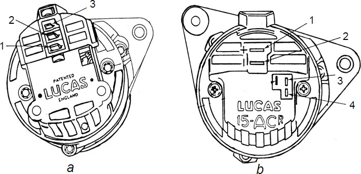
Hình 2.28: Máy phát Ä‘iện xoay chiá»u hiệu Lucas
1. Äầu bắt dÆ°Æ¡ng ắc quy; 2. Khởi Ä‘á»™ng; 3. Äánh lá»a; 4. Äánh lá»a; 5. Mát.
Bảng 2.a: Ký hiệu các đầu dây máy phát.
|
ÄẦU DÂY |
VIỆT NAM |
LIÊN XÔ CŨ |
ÄỨC | RUMANI | MỸ | NHẬT |
|---|---|---|---|---|---|---|
|
Phát Äiện |
FA | Я | D+ | A1 |
A hoặc GEN |
B |
|
KÃch ThÃch |
KT | Ğ© | DF | B1 | F | F |
|
Nối Mát |
M | M- | D- | â”´ | GRD | N(E) |
|
Nối Với bình điện |
A | Ğ‘ | 30 | + | BAT | B |
-
Sá»a chữa chi tiết máy phát Ä‘iện má»™t chiá»u.
      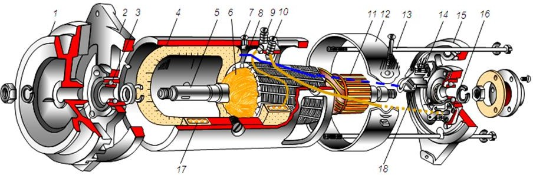
Hình 2.29: Cấu tạo máy phát Ä‘iện má»™t chiá»u.
1. Puly; 2. Nắp trước; 3. Vòng bi; 4. Stato; 5. Trục roto; 6. Cuộn dây roto;
7;17. Cuá»™n dây stato; 8. Roto; 9,10. Cá»c bắt dây; 11. Cổ góp; 12. Và nh chắn bụi; 13. á»c suốt; 14. Lò xo chổi than; 15. Nắp sau; 16. Giá đỡ chổi than dÆ°Æ¡ng;
18. Chổi than.
Quá trình sá» dụng máy phát Ä‘iện má»™t chiá»u trên ô tô cần thÆ°á»ng xuyên chú ý tá»›i chế Ä‘á»™ là m việc của nó, cụ thể là phải quan tâm tá»›i những vấn Ä‘á» sau.
-
Lượng Ä‘iện năng phát ra: Trong Ä‘iá»u kiện là m việc bình thÆ°á»ng, Ä‘iện năng của máy phát phát ra phải bảo đảm cho các thiết bị dùng Ä‘iện trên Ô tô hoạt Ä‘á»™ng bình thÆ°á»ng (còi, đèn, gạt nÆ°á»›c…) và các đồng hồ Ä‘o dòng Ä‘iện, Ä‘iện áp Ä‘á»u chỉ ở chỉ số định mức.
-
Hiện tượng bên ngoà i: Không có tiếng va cÆ¡ khÃ, Ä‘á»™ nóng trong phạm vi cho phép. Không có mùi cháy, không có khói và tia lá»a phát ra.
-
Chế Ä‘á»™ là m việc: Không để máy phát phải là m việc trong Ä‘iá»u kiện nặng tải, bằng cách không sá» dụng đồng thá»i nhiá»u thiết bị dùng Ä‘iện trong cùng má»™t thá»i Ä‘iểm. Thá»i gian là m việc của máy phát Ä‘iện không nên kéo dà i liên tục quá lâu, nếu Ô tô phải hoạt Ä‘á»™ng vá»›i cung Ä‘á»™ quãng Ä‘Æ°á»ng dà i thì cứ trong khoảng 2-3 giá» nên cho máy nghỉ tối thiểu 20-30 phút. ThÆ°á»ng xuyên kiểm tra Ä‘á»™ căng của dây Ä‘ai cánh quạt, bánh Ä‘ai trên trục roto và dây Ä‘ai nối vá»›i puli trên trục khuá»·u (kiểm tra khi dừng máy).
-
Äịnh kỳ bảo dưỡng: Muốn cho máy phát Ä‘iện trên Ô tô hoạt Ä‘á»™ng tốt, ngÆ°á»i sá» dụng phải nắm được các yêu cầu kỹ thuáºt cÆ¡ bản đối vá»›i máy phát Ä‘iện sau, để thÆ°á»ng xuyên kiểm tra, bảo dưỡng.
+ Trục ô tô quay trÆ¡n, không bị rÆ¡ hoặc đảo. Äá»™ đảo theo hÆ°á»›ng kÃnh cho phép lá»›n nhất là 0,1mm. Äá»™ côn và độ ôvan của cổ trục không quá 0,05mm.
+ Các tấm mica cách Ä‘iện trên cổ góp không được nhô lên khá»i các lá góp hoặc lệch so vá»›i cổ trục 0,05mm. TrÆ°á»ng hợp cổ góp có Ä‘á»™ mòn không Ä‘á»u, cần phải tiện láng lại, thì không được tiện quá 4-5mm so vá»›i Ä‘Æ°á»ng kÃnh ban đầu.
+ Chổi than không được mòn qua ½ chiá»u dà i khi còn má»›i. Mặt tiếp xúc của chổi than vá»›i các phiến góp phải bảo đảm ≥75% diện tÃch cắt ngang. Dây Ä‘iện nối ở chổi than ra ngoà i phải hoà n toà n chắc chắn, tin cáºy.
+ Toà n bá» mặt cổ góp phải luôn sạch bóng, Ä‘á»u đặn, nếu có vết cháy hoặc lồi lõm thì dùng giấy ráp mịn để đánh bóng lại, sau đó dùng hÆ¡i xì sạch các bụi bẩn.
+ á»” bị trên trục roto phải luôn đủ mỡ bôi trÆ¡n. Nếu ổ bi có lắp ống lót thì khi hở không được quá 0,07mm. Äá»™ lá»ng theo chiá»u dá»c của bi chỉ được phép nằm trong phạm vi 0,1-0,3 mm.
+ Khe hở giữa nắp trước của máy phát điện tới lá thông gió không được hẹp hơn 0,5mm.
+ Nhiệt độ ở vỠngoà i của máy phát điện khi là m việc với phụ tải lớn nhất cũng không được vượt qua 450C, nhiệt độ cổ góp không quá 600C.
+ Bánh Ä‘ai trên trục roto lắp ghép không bị rÆ¡, có mặt phẳng trùng vá»›i mặt phẳng bánh Ä‘ai trên trục khuá»·u. Äá»™ căng của dây Ä‘ai nối từ bánh Ä‘ai trục khuá»·u đến và dây Ä‘ai nối từ quạt mát (nếu có) phải ở mức bình thÆ°á»ng, không được dùng phÆ°Æ¡ng pháp tăng thêm miếng đệm để Ä‘iá»u chỉnh.
+ Nếu ở giá máy phát có vòng cao su giảm xóc thì chúng phải có tÃnh trạng Ä‘á»u nhau vá» Ä‘á»™ dà y và mức Ä‘á»™ bá»n vững.
Sá»a chữa các chi tiết.
-
Kiểm tra và sá»a chữa cuá»™n dây phần ứng. NhÆ° trên đã trình bà y, cuá»™n dây phần ứng có thể hÆ° há»ng ở ba dạng: Ngắn mạch, chạm mát hoặc đứt mạch.
Muốn Ä‘i đến quyết định chá»n phÆ°Æ¡ng pháp sá»a chữa cụ thể, hợp lý thì phải kiểm tra để xác định tình trạng hÆ° há»ng tháºt chÃnh xác. Sau đây sẽ giá»›i thiệu các biện pháp kiểm tra và sá»a chữa.
+ Khi bị ngắn mạch: Äể kiểm tra sá»± ngắn mạch của cuá»™n dây phần ứng, ngÆ°á»i ta sá» dụng thiết bị chuyên dùng là gronha.
    Â
Hình 2.30: Kiểm tra ngắn mạch bằng gronha.
ÄÆ°a nguồn Ä‘iện xoay chiá»u và o gronha, rồi dùng má»™t lá thép má»ng hoặc lưỡi cÆ°a gãy đặ lên trên rô to, nhÆ°ng lá thép vẫn giữ nguyên vị trà không quay theo. Nếu tá»›i rãnh nà o thấy lá thép bị rung lên, thì chứng tá» cuá»™n dây trong rãnh đó bị ngắn mạch hoặc mica giữa 2 lá góp tÆ°Æ¡ng ứng bị cháy, tạo nên sá»± ngắn mạch của cuá»™n dây bên trong rãnh.
Sở dÄ© lá thép rung, vì cuá»™n dây trong rãnh bị ngắn mạch sẽ tạo thà nh má»™t mạch kÃn, mạch kÃn nà y nắm trong từ trÆ°á»ng biến đổi của gronha nên cảm ứng ra dòng Ä‘iện, dòng cảm ứng chạy trong mạch kÃn đáo, sẽ sinh ra từ trÆ°á»ng xoay chiá»u riêng, từ trÆ°á»ng nà y không ngừng hút và đẩy lá thép. Nếu rô to còn tốt thì đặt lên gronha S.Ä‘.Ä‘ cảm ứng sinh ra sẽ triệt tiêu lẫn nhau, vì các cuá»™n dây của roto đặt đối xứng nhau, tức là trong cuá»™n dây của rô to không có dòng Ä‘iện, lúc đó lá thép sẽ không bị rung.
TrÆ°á»ng hợp không có gronha, có thể kiểm tra bằng cách dùng bóng đèn và nguồn Ä‘iện má»™t chiá»u để kiểm tra.
+ Khi bị chạm mát. Muốn xác định xem cuộn dây phần ứng có bị chạm mát hay không, ta dùng các phương pháp sau:
Bằng ôm kế: Äặt má»™t que Ä‘o của ôm kế kế tiếp xúc vá»›i trục roto, que Ä‘o kia tiếp xúc vá»›i phiến góp theo vị trà nằm ngang. Nếu thông mạch kết luáºn cuá»™n dây nối vá»›i phiến góp bị chạm mát.
     Â
Hình 2.31: Kiểm tra chạm mát bằng ôm kế.
Bằng đèn chiếu sáng. Một đầu dây đèn nối với nguồn điện, đầu thứ 2 của dây đèn nối với cổ góp. Dây còn lại của nguồn nối với trục roto. Nếu đèn sáng chứng tỠcuộn dây phần ứng bị chạm mát.
     Â
     Hình 2.32: Kiểm tra chạm mát bằng ắc quy và bóng đèn.
+ Khi đứt mạch. Cuá»™n dây phần ứng bị đứt, phần lá»›n xẩy ra ngay tại đầu dây hà n và o phiến góp, do mối hà n bị bong ra. Äầu dây bị bong mối hà n thÆ°á»ng nằm ở phiến góp bị cháy nghiêm trá»ng nhất.
Có thể dùng gronha hay ôm kế để kiểm tra.
Khi cuá»™n dây phần ứng có sá»± cố ngắn mạch, chạm mát hay đứt thì biện pháp sá» lý hoà n toà n phụ thuá»™c và o đặc Ä‘iểm đứt mạch hoặc tiếp xúc không tốt nằm ở phiến góp, các Ä‘oạn dây nối phần tá» vá»›i phiến góp thì chỉ cần hà n lại. Nếu đứt mạch và tiếp xúc không tốt lại nằm ở trong phần tá» dây cuốn thì phải thay bằng dây cuốn má»›i. TrÆ°á»ng hợp không có Ä‘iá»u kiện thay dây cuốn má»›i, thì có thể khắc phục tạm thá»i bằng cách:
-
Nối tắt. Cắt đứt hai đầu của cuá»™n dây bị há»ng ra, bá»c mạch Ä‘iện kỹ lại hai đầu dây đó, rồi nhét và o chá»— lõm chèn chặt lại. Dùng má»™t dây đồng ngắn để nối tắt chá»— cuá»™n dây đã bị cắt ra.
-
Rút ngắn cuá»™n dây. Cắt từng vòng của bối dây có sá»± cố để rút ra, cho đến khi kiểm tra thấy đã trừ bỠđược Ä‘iểm hÆ° há»ng thì hà n đầu còn lại của cuá»™n dây và o lá góp tÆ°Æ¡ng ứng. Nếu số vòng dây bá» Ä‘i quá nhiá»u thì tốt nhất là thay má»›i.
-
Kiểm tra và sá»a chữa cuá»™n dây kÃch từ. Dây quấn kÃch từ thÆ°á»ng hay hÆ° há»ng ở những góc lượn, chá»— dẫn ra và nhất là tại nÆ¡i dây dẫn Ä‘i qua vá» máy. Những hÆ° há»ng thÆ°á»ng gặp ở dây quấn kÃch từ là : chạm ra mát, đứt mạch hoặc tiếp xúc ở những mối nối không tốt, ngắn mạch giữa những vòng dây.
-
+ Khi bị ngắn mạch. Sá»± cố ngắn mạch giữa các vòng dây trong dây quấn kÃch từ của máy phát Ä‘iện má»™t chiá»u có thể phát hiện bằng các phÆ°Æ¡ng pháp:
-
Nối dây quấn kÃch từ vá»›i nguồn má»™t chiá»u. Các bối dây sẽ phát nóng Ä‘á»u nhau. Nếu thấy, ở nối dây nà o không nóng hoặc Ä‘á»™ nóng kém, thì xác định bối dây ấy đã bị ngắn mạch, vì số vòng dây của bối dây đã bị ngắn mạch không có dòng Ä‘iện Ä‘i qua.
-
Nối dây quấn kÃch từ vá»›i nguồn Ä‘iện xoay chiá»u. Bối dây phát nóng mạnh nhất sẽ là bối dây có sá»± cố vì vòng dây ngắn mạch nằm trong từ trÆ°á»ng biến thiên sẽ cảm ứng ra đòng Ä‘iện chạy trong đó rất lá»›n.
-
Nối dây quấn kÃch từ vá»›i nguồn má»™t chiá»u rồi dùng má»™t lá thép thá» trên đầu các cá»±c từ, nếu cá»±c từ nà o có lá»±c hút lá thép yếu hoặc không hút thì chứng tá» cuá»™n dây đó có sá»± cố.
+ Khi bị chạm mát. Äể tìm bối dây quấn kÃch từ chạm mát, ta ngắt toà n bá»™ nó ra khá»i phần ứng rồi Ä‘em nối vá»›i nguồn Ä‘iện má»™t chiá»u. Dùng vôn kế má»™t chiá»u để Ä‘o nhÆ° hình vẽ 2.31.
Một đầu của vôn kế nối với vỠmáy, đầu thứ 2 của vôn kế là n lượt cho tiếp xúc với cầu nối giữa các bối dây của từng cực từ. Bối dây bị chạm mát là bối dây chỉ có chỉ số điện áp ở 2 đầu nhỠnhất.
ÄÆ¡n giản hÆ¡n có thể tách rá»i bối dây của dây quấn kÃch từ ở từng cá»±c từ, rồi sau đó dùng đèn kiểm tra hoặc dùng mêgôm mét để xác định bối dây chạm mát.
     Â
Hình 2.33: SÆ¡ đồ tìm sá»± cố chạm mát của dây quấn kÃch từ
+ Khi bị đứt mạch. Sá»± cố dây quấn kÃch từ bị đứt mạch thÆ°á»ng xảy ra ở cầu nối giữa các bối dây, ở các dây dẫn ra hoặc ở các mối nối giữa dây dẫn ra và đầu cốt của dây quấn kÃch từ.
Äể phát hiện vị trà đứt mạch, ta đặt Ä‘iện áp định mức và o dây quấn kÃch từ. Dùng vôn kế đấu má»™t đầu và o nguồn, đầu thứ 2 lần lượt Ä‘o trên các cầu nối giữa các cá»±c từ. Tá»›i bối dây có sá»± cố đứt mạch vôn kế sẽ có số Ä‘o đúng bằng toà n bá»™ Ä‘iện áp nguồn.
Tùy theo tình trạng hÆ° há»ng của cuá»™n dây kÃch từ mà chá»n cách xá» lý, sá»a chữa, khắc phục. TrÆ°á»ng hợp bắt buá»™c phải thay thế bằng cuá»™n dây má»›i thì dùng má» hà n nhả riêng bối dây có sá»± xố ra. Ghi nhá»› chiá»u quấn dây, cách đấu dây, sau đó đếm gõ bá» số vòng dây đã há»ng. Dùng dây đồng có Ä‘Æ°á»ng kÃnh nhÆ° dây cÅ© quấn lại bối dây trên cá»±c từ vá»›i số vòng quấn nhÆ° đã đém khi gỡ bá».
-
Kiểm tra và sá»a chữa cổ góp, chổi than.
    Â
Hình 2.34: Kiểm tra độ cong trục rô to máy phát.
1. Äồng hồ so; 2. Rô to máy phát; 3. MÅ©i chống tâm.
Trong qua trình máy phát Ä‘iện là m việc, cổ góp và chổi than phải được bảo dưỡng cẩn tháºn. Các chi tiết nà y phải luôn được sạch sẽ. Bụi kim loại và bụi than dÃnh dầu bám lên các chi tiết sẽ là m ảnh hưởng rất nhiá»u đến chế Ä‘á»™ là m việc của máy phát, đó cÅ©ng là má»™t trong những nguyên nhân sinh ra tia lá»a trên cổ góp. Tia lá»a sinh ra trên cổ góp cà ng lá»›n và thá»i gian cà ng dà i sẽ là m cho cổ
góp bị cháy mòn cà ng nghiêm trá»ng. Sá»± cháy mòn cổ góp cà ng nghiêm trá»ng, lại là m cho tia lá»a lá»›n hÆ¡n. Do đó nếu ở cổ góp thấy xuất hiện tia lá»a không bình thÆ°á»ng, phải kịp thá»i sá»a chữa ngay để tránh cháy cổ góp.
Bá» mắt là m việc của cổ góp phải là hình trụ và phẳng, không được mấp mô, không có vết cháy xém. Mica cách Ä‘iện giữa các phiến góp không được nhô lên khá»i bá» mặt là m việc của cổ góp. Äá»™ lệch tâm cho phép của cổ góp không được vượt qua 0.02 - 0.03mm. Khi cổ góp lệch tâm quá lá»›n, mà i hoặc tiện láng lại.
Cổ góp dù không được láng lại cũng phải là m sạch rãnh giữa các phiến đồng với độ sâu 0,6 ÷ 0,8mm. Rô to của máy phát sau khi quấn lại được tẩm sấy kỹ, kiểm tra và mang ra sỠdụng.
    Â
Hình 2.35: Là m sạch cổ góp bằng dao chuyên dùng.
1. Rôto; 2. Dao chuyên dùng; 3. Lá góp (phiếu đồng); 4. Rãnh cách điện.
Chổi than phải yêu cầu có bá» mặt là m việc láng bóng. Lá»±c ép của lò xo vừa phải, để bá» mặt chổi than ôm khÃt lấy bá» mặt cổ góp. Khi chổi than bị há»ng, cần thay thế chổi than má»›i phải cùng kÃch thÆ°á»›c, mã hiệu.
Äể đạt được bá» mặt là m việc của chổi than nhÆ° ban đầu, ta cắt giấy ráp thà nh má»™t băng dà i rồi Ä‘em ốp lên mặt cổ góp sao cho mặt ráp quay vá» phÃa chổi than, lá»±c nén chổi than giữ bằng khi máy là m việc bình thÆ°á»ng. Kéo giấy ráp qua lại theo chiá»u xuống dÆ°á»›i ốp và o cổ góp, nếu kéo vênh lên phÃa trên sẽ là m cho cạnh của chổi than bị mòn, bá» mặt là m việc của chổi than sẽ bị thu nhá» và chổi than cÅ©ng không ôm khÃt cổ góp.
    Â
Hình 2.36: Rà chổi than máy phát má»™t chiá»u
1. Băng giấy; 2. Cổ góp; 3. Chổi than và giá.
Vá»›i chổi than cứng, cần bắt đầu bằng giấy ráp cỡ hạt lá»›n và kết thúc bằng giấy ráp cỡ hạt mịn. Chổi than má»m, có thể tiến hà nh ngay bằng giấy ráp hạt mịn.
Hình 2.37: Sơ đồ nguyên lý kiểm tra lực ép lò xo chổi than máy phát điện.
1. Cổ góp; 2.Chổi than; 3. Lực kế kiểm tra; 4. Băng giấy.
Tạo xong bỠmặt là m việc cho chổi than phải là m sạch bụi than và bụi thủy tinh bằng khà nén. Lưu ý không thổi bụi than và bụi thủy tinh và o các chi tiết khác của máy.
-
Thay thế các pu ly bị sứt vỡ đến ngang đáy rãnh lắp dây Ä‘ai hoặc mòn há»ng lá»— lắp cùng rãnh then, pu ly bị sứt mẻ nhá» có thể hà n đắp sau đó sá»a lại lãnh lắp dây Ä‘ai. Tán lại các Ä‘inh tán trên giá chổi than. Thay các chổi than có chiá»u cao nhá» hÆ¡n 6mm.
-
Lắp ghép:    Â
Hình 2.38: Sơ đồ lắp ghép máy phát.
Lắp máy phát theo trình tá»± ngược lại vá»›i quá trình tháo. Các vòng bi được tra đủ mỡ, khe hở lắp ghép giữa vòng bi và bạc lót không quá 0,07mm đồng thá»i phải có tấm dạ chắn mỡ má»›i. Các ca bi ngoà i và trong, nếu thấy hÆ¡i mòn, trÆ°á»›c khi lắp ghép có thể sá» dụng phÆ°Æ¡ng pháp gại Ä‘iện trên cổ trục hoặc trên ca bi.
Trong quá trình lắp cần thÆ°á»ng xuyên kiểm tra sá»± quay trÆ¡n của rô to trên hai vòng bi nhất là khi đã kết thúc việc siết hai ốc suốt.
Khi lắp pu ly cần kiểm tra khe hở giữa mặt đầu các cách quạt với nắp trước máy phát không được nhỠhơn 0,5mm.
-
Kiểm tra thá» máy phát Ä‘iện má»™t chiá»u.
Máy phát má»™t chiá»u sau khi sá»a chữa được kiểm thá» trên thiết bị chuyên dùng cÅ©ng có thể bằng các phÆ°Æ¡ng pháp Ä‘Æ¡n giản nhÆ° sau.
     Â
Hình 2.39: Nguyên lý kiểm thá» máy phát má»™t chiá»u theo chế Ä‘á»™ Ä‘á»™ng cÆ¡
1. ắc quy; 2. Ampe kế; 3. Máy phát; 4. Tốc kế.
-
Tiêu chuẩn kỹ thuáºt
+ Äể máy phát là m việc ở chế Ä‘á»™ Ä‘á»™ng cÆ¡ trong 1 ÷ 2 phút, đồng hồ ampe báo 3,5 ÷ 5A vá»›i tốc Ä‘á»™ tối thiểu phải đạt 550 vòng/phút.
+ Máy phát quay đúng chiá»u, không ồn, trong khi thá» nhiệt Ä‘á»™ là m việc của máy không vượt quá 400C.
     Â
Hình 2.40: Nguyên lý đấu thá» máy phát má»™t chiá»u ở chế Ä‘á»™ không tải.
1. Tốc kê; 2. Máy phát; 3. Ampe kế; 4. Khóa điện; 5. Vôn kế; 6. ắc quy.
+ Khi thỠở chế độ không tải, rô ro máy phát quay với tốc độ 800 ÷1000 vòng/phút, điện áp máy phát phải đạt trên 12,5V.
+ Khi thỠở chế độ có tải, rô to máy phát quay với tốc độ 2500 ÷ 3000 vòng/phút, điện áp máy phát phải lớn hơn 12,5V.
     Â
Hình 2.41: SÆ¡ đồ nguyên lý đấu thá» có tải máy phát má»™t chiá»u.
1. Máy phát; 2. Ampe kế; 3. Khóa điện; 4. Vôn kế; 5. Biến trở; 6. ắc quy.
Bảng 2.b: Các hÆ° há»ng của máy phát Ä‘iện.
|
HIỆN TƯỢNG |
NGUYÊN NHÂN |
CÃCH KHẮC PHỤC |
|---|---|---|
|
1. Máy phát là m việc ồn. |
|
|
|
2. Cầu chì hoặc đèn chiếu sáng bị cháy liên tục. |
|
|
|
3. Äèn báo không nạp nhấp nháy sau khi khởi Ä‘á»™ng Ä‘á»™ng cÆ¡ hoặc luôn sáng khi xe chạy. |
|
|
|
4. Äèn báo không nạp nhấp nháy khi xe chạy |
|
|
|
5. Äồng hồ Ä‘iện báo nạp chỉ ra ắc quy phóng Ä‘iện khi xe chạy |
|
|